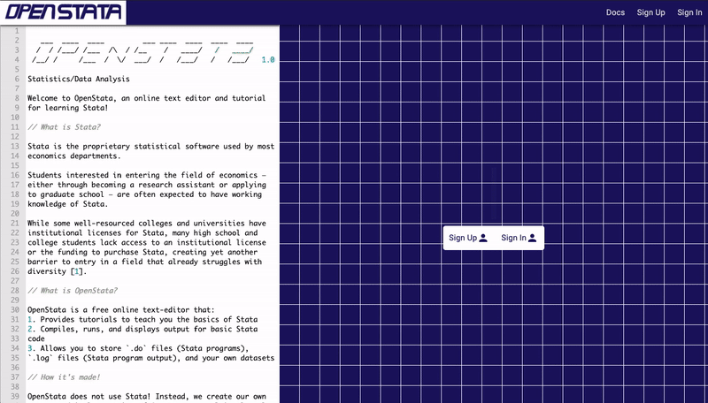
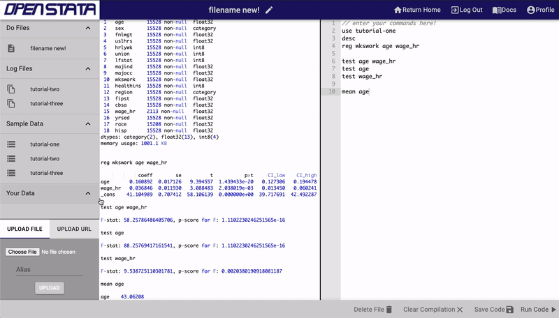
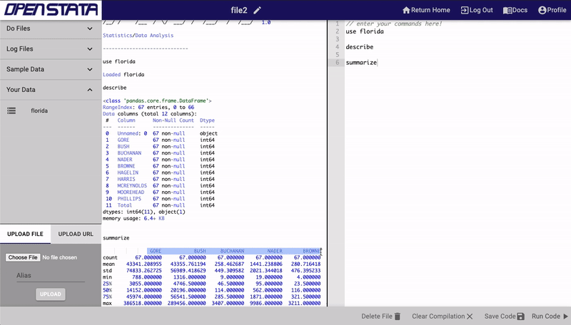
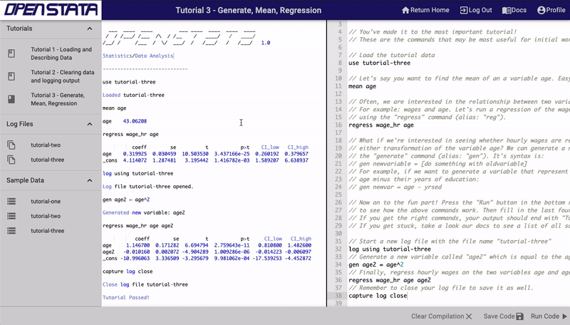
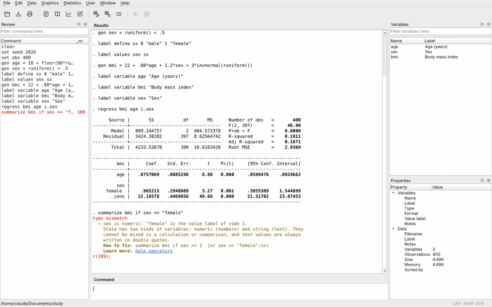

dofile web demo: moodboard (deliverable 1 of the UI/UX design step, docs/design/README.md)
1. Legacy OpenStata (our own work: reusable, except the "OpenStata" wordmark)

Landing: the editor is the pagethe landing text as a file in the editor, with line numbers; the ASCII banner; plain-text "what is this"the graph paper (noisy, dated) and the saturated navy (#1b1464 is too strong as a page color)the right half is empty; use it for "try it", the install lines and a sample of the logsign up / sign in (no accounts: everything runs in the browser)

Editor: files | log | codethree columns; the log reads like a terminal; the actions together in one bargray-on-gray drawer (#cbc9cb on #dcdadd, low contrast); no Break and no busy state; no syntax highlighting;
the log is pandas output, not a Stata-style log

Upload, then use the data"Your Data" in the file list, with the uploaded file listed at oncethe upload form (Choose File + Alias + Upload) takes a third of the drawer; use a button + drag and drop;
the bottom of the drawer is dead space

Tutorials as commented do-filesa tutorial is just a .do file with comments: the sample project can be the samelong comment lines run off the editor (no wrap); light-blue keywords in the log are hard to read
2. Stata and OpenDTA desktop GUIs (layout and workflow may inform ours; no colors, fonts, icons or text copied)

OpenDTA (MIT; screenshot from its README)the explained error under a failed command: what went wrong, how to fix it, where to learn more;
the error line and its return code stand out from the log; command history with each rc;
a variables list with labels, filterable; a properties panel for the data (obs, vars, size)its colors, fonts and icons, and five panels at once: a web demo starts with fewerStata's GUI (our own 2020 recording; the screenshot stays out of git)the do-file editor and the results as separate views; "run selection" is the everyday action,
and the selection shows what ran; the log echoes each command (". cmd") before its output;
a command line for one-off commands next to the do-fileits colors, syntax-highlight scheme, fonts, icons, toolbar, menus and wording
What we need that none of them hasBreak and a busy state that are always visible while code runsa crashed or reset worker (rc 9998) shown as a status, with "data is gone, files stay"graphs inline in the log; Ctrl+Enter runsa phone layout: editor and log as tabs"download everything" for the working folder; light and dark mode that follow the system
3. Other references (links in README.md; the screenshots stay out of git)
webR REPL (R in WebAssembly)
the closest product: editor, console and files on one page; a plain toolbar of text buttonsfour panes at once is busy for a demo; ours starts with twowebR, darkdark mode as the same layout with the tones swapped; comments still readablepure black panes are harsh; use a dark gray with lighter panelsDuckDB Web Shell, darka terminal-first page; a thin top bar (New, Share, Import, Datasets); the startup line with the versionPyodide consolethe banner as the first lines of output (version, how to get help)marimo playgrounda quiet empty state with a few starting actions; small icon rail on the left; one muted accentthe notebook model (cells): a do-file runs top to bottomarXiv abstract pagethe academic register: dense small type, plain links, a side column of facts; it reads as a tool
4. Candidate palette (a starting point for the design system; contrast against the page and panel colors)
light
page#f7f7f5
panel#ffffff
border#d9dbe0
text#1e212815.0 / 16.1
muted#5a606b5.9 / 6.3
accent#3a44858.4 / 9.0 (softened navy)
error#b3261e6.1 / 6.5
ok#1f6f3f5.8 / 6.2
. regress wage age
(output)variable foo not found
r(111);[ Run ]running… 2.1 s[ Break ]
dark
page#14161b
panel#1c1f26
border#30343d
text#e4e6ea14.5 / 13.2
muted#9aa1ad7.0 / 6.3
accent#a3acec8.3 / 7.6
error#f2867c7.3 / 6.7
ok#7fcf9a9.7 / 8.9
. regress wage age
(output)variable foo not found
r(111);[ Run ]running… 2.1 s[ Break ]
5. Direction in one line
A quiet, editor-first tool in the academic register: plain text first, one monospace font and one UI font, neutral
light and dark surfaces with one softened navy accent, and every state (running, Break, error, reset) shown in words.